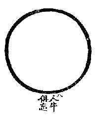

BuddhaSasana Home Page
This document is written in Vietnamese, with Unicode Times
font
 Dẫn
Tình phàm rơi rớt, ý thành đều không, chỗ có Phật chẳng cần ngao du, chỗ không Phật phải chạy qua gấp. Hai đầu không dính, ngàn mắt khó xem. Trăm chim ngậm hoa, một trường bối rối.
Giảng Giải
Tình phàm rơi rớt, ý thành đều không: Chúng sanh còn mê cho nên là phàm, thấy mình mê, biết Phật giác gọi đó là Thánh. Khi không còn thấy phàm thánh đối đãi nữa, nên nói phàm thánh đều không. Do đó trong nhà Thiền hay nói chỗ có Phật chẳng cần ngao du, chỗ không Phật phải chạy qua gấp. Chỗ không Phật phải chạy qua gấp thì hợp lý, nhưng chỗ có Phật sao không cần ngao du? Vì: "Có Phật", "Không Phật" là ngôn ngữ hai bên đối đãi, giả lập không thật nên phải vượt qua. Qua hết đối đãi là không còn trâu, không còn người chăn. Hai đầu không dính, ngàn mắt khó xem: Khi tâm không còn dính mắc hai bên đối đãi, tranh chỉ là vòng tròn trắng tượng trưng tánh Viên Giác. Tánh Viên Giác thì không có một vật, không hình, không tướng thì thấy cái gì ? Cho nên nói ngàn mắt khó xem. Trăm chim ngậm hoa, một trường bối rối: Ðây dẫn chuyện của ngài Ngưu Ðầu Pháp Dung. Trước khi gặp Tứ Tổ Ðạo Tín, Ngài quán từ bi nên được chim thương mến đem hoa trái đến cúng dường. Khi gặp Tứ Tổ Ðạo Tín dạy buông hết cả kiến chấp hai bên, ngài tu một thời gian sạch hết vọng niệm hai bên, thì từ đó chim không cúng dường hoa trái nữa. Ðói với người chưa thấu lý Thiền, thì cho rằng trước Ngài tu cao có nhiều phước, nên được chim cúng dường, sau ngài tu dở ít phước, nên chim không cúng dường nữa. Lý đó không đúng, vì tu đến chỗ không còn thấy hai bên, không còn khởi niệm để quán, nên chim không thấy không biết và không đem hoa trái đến cúng dường. Nếu người tu còn để chư Thiên hay chim đem hoa trái đến cúng dường là còn niệm, còn quán, nên nói rằng còn bối rối, chưa ra khỏi hai bên.
Tụng
Tiên sách nhân ngưu tận thuộc không
Bích thiên lưu quách tín nan thông
Hồng lô diệm thượng tranh dung tuyết
Ðáo thử phương năng hiệp Tổ TôngDịch
Roi gậy người trâu thảy đều không
Trời xanh thăm thẳm tín chẳng thông
Lò hồng hừng hực nào dung tuyết
Ðến đó mới hay hiệp Tổ TôngGiảng Giải
Trâu đã không nên roi gậy cũng bỏ, người chăn cũng không nốt. Trời xanh thênh thang không có một gợn mây, thì lúc đó trông thấy cái gì? Cho nên tin tức không thông được. Lò lửa đỏ hừng đâu còn một mảnh tuyết. Chừng đó mới hiệp với con đường Phật Tổ đi.
Người khi đã vượt qua kiến chấp đối đãi hai bên thì không còn ngã và pháp. Ngã pháp không còn thì trí tuệ viên mãn, nên tượng trưng bằng vòng tròn Viên giác, chỗ mà Lục Tổ nói: "Bản lai vô nhất vật" đó vậy.
[Lời Tựa]
Tranh Thiền Tông: [1] [2] [3] [4] [5] [6]
[7] [8] [9] [10]